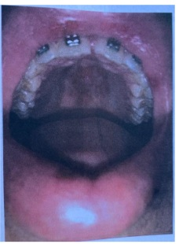
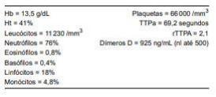

Diagnóstico da síndrome do anticorpo antif osf olipídeo SAAF Paciente do sexo feminino, 28 anos de idade, procura o departamento de emergência queixando-se de dor e edema no membro inferior direito. Nega passado mórbido, exceto por dois abortos espontâneos recentes. Não teve qualquer cirurgia ou imobilização recente. Ao exame físico, seus dados vitais são normais, é notável edema de membro inferior direito com dorsi exão dolorosa. No membro inferior esquerdo é observado livedo leve. Ultrassom com Doppler de membro inferior é solicitado e demonstra Trombose venosa ilíaco-femoral do lado direito. Os exames laboratoriais coletados à admissão são normais, exceto por tempo de tromboplastina parcial (PTT) três vezes acima do valor de referência e trombocitopenia leve. Beta-HCG negativo. Com relação ao quadro clínico descrito acima, considerando o diagnóstico mais provável, assinale a alternativa CORRETA em relação à terapia de escolha.
Mulher de 18 anos apresenta edema acentuado dos membros inferiores. Desconhece comorbidades e nega o uso de medicamentos. Ao exame físico, PA 150/94mmHg, FC 76bpm, FR 16ipm, SpO2 95% (em ar ambiente). Há edema palpebral, na parede abdominal e nos membros inferiores. Palpam-se pequenos linfonodos indolores nas cadeias cervicais, axilares e inguinais. Os sons respiratórios estão reduzidos em ambas as bases dos hemitórax. Algumas articulações interfalangeanas proximais apresentam-se com o volume aumentado, hiperemiadas e dolorosas à palpação. EXAMES DE LABORATÓRIO: Hg 12,2g/dL; LG 1890/mm³; NS 896/mm³; linfócitos 320/mm³; Plaq 109.800/mm³; creat 2,8mg/dL; sódio 135mEq/L; potássio 4,8mEq/L; LDH 540U/L; ácido úrico 9,3mg/dL; albumina sérica 2,3g/dL; C3 26; C4 3; FAN 1/320 padrão nuclear homogêneo; exame de urina: proteína 3+; hemoglobina negativo; 8 leucócitos/campo; 3 hemácias/campo. Assinale a alternativa que apresenta uma conduta INADEQUADA nesse caso:
Mulher de 18 anos apresenta edema acentuado dos membros inferiores. Desconhece comorbidades e nega o uso de medicamentos. Ao exame físico, PA 150/94mmHg, FC 76bpm, FR 16ipm, SpO2 95% (em ar ambiente). Há edema palpebral, na parede abdominal e nos membros inferiores. Palpam-se pequenos linfonodos indolores nas cadeias cervicais, axilares e inguinais. Os sons respiratórios estão reduzidos em ambas as bases dos hemitórax. Algumas articulações interfalangeanas proximais apresentam-se com o volume aumentado, hiperemiadas e dolorosas à palpação. EXAMES DE LABORATÓRIO: Hg 12,2g/dL; LG 1890/mm³; NS 896/mm³; linfócitos 320/mm³; Plaq 109.800/mm³; creat 2,8mg/dL; sódio 135mEq/L; potássio 4,8mEq/L; LDH 540U/L; ácido úrico 9,3mg/dL; albumina sérica 2,3g/dL; C3 26; C4 3; FAN 1/320 padrão nuclear homogêneo; exame de urina: proteína 3+; hemoglobina negativo; 8 leucócitos/campo; 3 hemácias/campo. Assinale a alternativa que apresenta o diagnóstico MAIS PROVÁVEL nesse caso:
Mulher de 28 anos vai ao consultório para seguimento de lúpus eritematoso sistêmico. A manifestação ao diagnóstico foi nefropatia renal classe 2, artrite, FAN 1/320 padrão nuclear homogêneo e anti-DNA 1/80.(reduziu para 1/10 após o tratamento inicial). A última consulta ocorreu 1 ano atrás. Está assintomática. Faz uso regular de hidroxicloroquina 400mg/dia e prednisona 5mg MID. O exame físico não apresenta anormalidades. Assinale a alternativa que apresenta um exame propedeutico que NÃO está indicado na avaliação periódica dessa paciente.
Quanto às trombo lias adquiridas, especi camente quanto à síndrome de anticorpos antifosfolípides (SAF), assinale a alternativa correta.
Uma paciente de 33 anos, nulípara, recebeu o diagnóstico de nefrite lúpica classe IV. Sua função renal é normal, mas a proteinúria de 24 horas é de 3,5g. Qual seria a melhor opção para o tratamento de indução neste caso?
Preenche critérios diagnósticos para SAAF:
Dr. Antônio atende na UBS uma paciente de 34 anos com queixa de poliartralgias a qual traz resultado de exames que demonstram anemia, linfopenia e fator antinuclear positivo em títulos altos. Ao m da consulta, o médico prescreve hidroxicloroquina para ela. Devido a essa prescrição, Dr. Antônio deve encaminhá-la para avaliação do
Em relação ao lúpus eritematoso sistêmico (LES), é correto afirmar que
As drogas antimaláricas apresentam atividade imunomoduladora e podem ser úteis em várias doenças inflamatórias autoimunes. Assinale a alternativa que apresenta uma indicação bem estabelecida de hidroxicloroquina para o tratamento de doenças reumatológicas.
O acometimento pleuropulmonar em pacientes com doenças autoimunes sistêmicas é comum e pode levar ao aumento da morbidade e mortalidade. O diagnóstico precoce dessas manifestações oferece a melhor chance de intervir e melhorar o prognóstico. A respeito desse assunto, julgue o item. Em indivíduos com lúpus eritematoso sistêmico, a hemorragia pulmonar é a manifestação pleuropulmonar mais comum, seguida da pneumonite lúpica.
O padrão nuclear pontilhado grosso com placa cromossômica de células em metáfase não corada, exibido no exame de imunofluorescência indireta em células HEp-2, está em geral associado a quais anticorpos?
Em pacientes com diagnóstico de doença reumática autoimune como o lupus eritematoso sistêmico, com desejo de engravidar, quais os autoanticorpos que podem interferir diretamente na gravidez? Assinale a alternativa com as opções CORRETAS:
Qual exame a seguir é o mais específico para diagnóstico de lúpus eritematoso sistêmico?
Mulher, 20 anos, queixa-se de fadiga e queda de cabelos, iniciadas há dois meses. Refere dor em articulações das mãos e nos punhos. Exame físico: BEG, corada, eupneica; edema, calor e dor à palpação de punhos e segunda a quarta metacarpofalangeanas de ambas as mãos; lesões numulares com bordas hipercrômicas e centro eritematoso e atró co na fronte. Foto da oroscopia abaixo. Qual alteração mais provável no hemograma da paciente?

Revisar: possível letra faltando em enunciado
Em relação ao Lúpus Eritematoso Sistêmico (LES), é correto afirmar:
Ana Maria, 20 anos, foi diagnosticada com Lúpus Eritematoso Sistêmico (LES) há 6 meses com poliartrite inflamatória, lesões fotossensíveis em face, edema de membros inferiores, hipertensão arterial sistêmica além de proteinúria e hematúria no sumário de urina. Dra. Fernanda, reumatologista da paciente, descon ou de nefrite lúpica. Quais exames deveriam estar com resultados alterados para confirmar a suspeição diagnóstica de nefrite lúpica?
Mulher, 39 anos de idade, com lúpus eritematoso sistêmico (LES) há 4 anos, procura o PS com quadro de intensa fraqueza iniciada há cerca de 7 dias. Exame físico: descorada 4+/4, taquicárdica, taquipneica e com leve confusão mental. Exames laboratoriais: Hb = 3,9 g/dL (VR: 13,5 — 17,5 g/dL); VCM = 121 gL (VR: 80 — 96 fL); reticulócitos = 210.000 mm³(VR: 0,5 — 1,5% mm³); leucócitos = 2.450 mm³(VR: 3.000 — 10.000 mm³), com 340 linfócitos (VR: 900 — 2.900 mm³) e plaquetas 89.000 mm³(VR: 150.000 — 450.000 mm³). Qual é a hipótese diagnóstica mais provável e a conduta imediata a ser adotada?
Mulher de 30 anos procura atendimento devido a hipótese diagnóstica de lúpus eritematoso sistêmico. Relata início de rash malar, alopecia e artrite há 4 meses, além de leucopenia detectada no hemograma. A pesquisa de autoanticorpos foi positiva, com título 1:640 e padrão nuclear pontilhado grosso. O anticorpo que deve ser solicitado é o:
Um homem de 67 anos, com um longo histórico de hipertensão arterial sistêmica e dois infartos do miocárdio (há 2 e 4 anos), vem em tratamento de insu ciência cardíaca com fração de ejeção reduzida. Há 18 meses, devido à progressão de insu ciência renal crônica, vem em uso de hidralazina 100mg (3x ao dia), dinitrato de isossorbida (20mg 3x ao dia), carvedilol 25mg (2x ao dia). Consulta por um quadro de duas semanas de lesões cutâneas (pápulas eritematosas difusas) em tronco e região cervical que pioram por exposição ao sol, artralgias, febre baixa esporádica. Hemograma evidencia anemia discreta, VHS 80mm na primeira hora. Rx de tórax com derrame pleural bilateral. Não há congestão pulmonar, turgência jugular ou edema periférico. Qual dos seguintes exames poderá confirmar a causa da doença intercorrente?
Uma paciente de 35 anos de idade, afrodescendente, apresentou leucopenia em exame laboratorial. No período da investigação, estava sentindo febre e mal-estar. Além disso, apresentou artrite em joelhos bilateralmente e eritema em rash de borboleta na face. Com base nesse caso clínico e nos conhecimentos médicos correlatos, assinale a alternativa correta.
Mulher, 22 anos, com queixa de poliartrite simétrica de mãos, punhos e joelhos há 1 mês; emagrecimento de 6 kg; febre baixa e prostração; apresentou lesões de pele avermelhadas em face, tronco e braços, principalmente após exposição solar, que persistiram. Refere, também, que ao mesmo tempo surgiram aftas orais e queda de cabelo. Há 2 meses, terminou o noivado de um relacionamento de 8 anos. Diante do caso clínico, qual o diagnóstico mais provável e o exame mais específico para esse diagnóstico?
Mulher, 20 anos de idade, evoluindo há 3 meses com artralgia inflamatória e artrite não-erosiva em interfalangeanas e punhos, presença de rash malar associado a fotossensibilidade e úlceras orais. Tem anticorpo antinuclear (FAN) 1:160 nuclear homogêneo. Não apresenta comprometimento de outros órgãos no momento. Diante deste quadro,
Uma paciente de 18 anos, com diagnóstico de Lúpus eritematoso sistêmico há dois anos, baseado em queixas cutâneo- articulares e pleurite, procurou o hospital com queixas de edema de face, hematúria e hipertensão. Os exames complementares mostraram níveis baixos de C3, hematúria, proteinúria e cilindros hemáticos e retenção de escórias nitrogenadas (creatinina 3,1 mg/dL). Sabendo que um mês antes tinha creatinina de 0,8 mg/dL, aponte a primeira terapêutica a ser utilizada nesse momento.
Mulher, 28 anos, apresenta aborto de origem autoimune decorrente da presença de autoanticorpos circulantes de carga negativa, portadora de Lúpus Eritematoso Sistémico (LES) e presença confirmada de Anticoagulante Lúpico (LAC). É caracterizada pelo relato do caso apresentado:
Fertilidade gravidez e anticoncepção Gestante de 32 anos de idade, secundigesta e primípara, vem para a primeira consulta de pré-natal com 8 semanas e 2 dias de gestação. Está preocupada pois tem lúpus eritematoso sistêmico com acometimento cutâneo, articular e hematológico. Refere última crise há 7 meses e está em uso de hidroxicloroquina 400 mg e prednisona 10 mg por dia. Qual é a orientação com relação ao uso de hidroxicloroquina e prednisona na fase inicial da gestação?
Mulher de 27 anos de idade está em acompanhamento em ambulatório de serviço de referência por lúpus eritematoso sistêmico diagnosticado há 2 anos. Comparece em consulta queixando-se de edema progressivo de membros inferiores, urina espumosa e redução progressiva do volume urinário há 20 dias. Atualmente está em uso de prednisona 10 mg/dia e Azatioprina 150 mg/dia. No exame clínico, PA 150x90 mmHg, FC 100 bpm, FR 20 ipm, Temperatura axilar 36,5°C. Edema depressível de membros inferiores 2+/4+, edema de face +/4+. Não há outras alterações no restante do exame clínico. Considerando o quadro atual da paciente, qual das alternativas abaixo traz associações compatíveis entre a classificação da doença e os achados histológicos e laboratoriais?
Uma paciente gestante com vinte semanas apresentou exame anti-Ro positivo (repetido e confirmado). Com base nessa situação hipotética, é correto afirmar que a conduta mais adequada será.
Uma paciente de 24 anos, com diagnóstico de lúpus eritematoso sistêmico, foi atendida com quadro de hipertensão arterial, edema periférico e palidez cutânea. Seus exames mostraram: HT 24%, Hb 8,0g%, leucócitos 3200/mm3, plaquetas 78.000/mm3, ureia 75mg%, creatinina 2,0mg%, albumina 2,3g%, colesterol total 265mg%, sedimento urinário com PTN 3+ e 10 hemácias/campo e proteinúria de 4,5g/24h. Realizou uma biópsia renal que mostrou proliferação celular mesangial, nas alças capilares, difusamente, com importante in ltrado tubulointersticial e presença de crescentes celulares em mais de 50% dos glomérulos. Em relação ao caso, é correto afirmar que:
Sobre o Lúpus Eritematoso Sistêmico, seu quadro clínico, exames complementares e seus novos critérios diagnósticos (ACR/EULAR 2019) é CORRETO afirmar:
Uma paciente de 35 anos de idade, afrodescendente, comparece à consulta por apresentar artrite, anemia e rash em asa de borboleta na face. Realizou exames laboratoriais. Em relação a esse caso clínico e com base nos conhecimentos médicos correlatos, julgue os itens a seguir. O rash
Uma paciente de 35 anos de idade, afrodescendente, comparece à consulta por apresentar artrite, anemia e rash em asa de borboleta na face. Realizou exames laboratoriais. Em relação a esse caso clínico e com base nos conhecimentos médicos correlatos, julgue os itens a seguir. A artrite é caracterizada por ser unilateral nessa patologia.
Uma paciente de 35 anos de idade, afrodescendente, comparece à consulta por apresentar artrite, anemia e rash em asa de borboleta na face. Realizou exames laboratoriais. Em relação a esse caso clínico e com base nos conhecimentos médicos correlatos, julgue os itens a seguir. A prevalência no sexo feminino é semelhante em relação ao masculino.
Uma paciente de 35 anos de idade, afrodescendente, comparece à consulta por apresentar artrite, anemia e rash em asa de borboleta na face. Realizou exames laboratoriais. Em relação a esse caso clínico e com base nos conhecimentos médicos correlatos, julgue os itens a seguir. Leucopenia é um achado esperado.
Revisar: só 2 alternativas
Sobre os achados laboratoriais no Lupus Eritematoso Sistêmico (LES), assinale a alternativa CORRETA.
No lúpus eritematoso sistêmico, são fatores de pior prognóstico:
Paciente do sexo feminino, 40 anos, diabética e portadora de lúpus, apresentando elevação recente dos níveis pressóricos, sedimento urinário ativo (hematúria dismór ca e cilindros celulares), proteinúria=1,1 g/24 hs, além de hipocomplementemia e anticorpo anti-DNA positivo. Infere-se padrão histológico compatível com:
Revisar: possível letra faltando em enunciado
Uma paciente que apresenta diagnóstico de LES com glomerulopatia, vinha evoluindo sem atividade nos últimos três meses. Na última semana apresentou anasarca e hipertensão arterial. Dos exames abaixo, quais podem confirmar atividade da doença?
Mulher, 24 anos, há dois meses apresenta dor, edema e rigidez maior que uma hora em mãos, punhos, ombros e joelhos. Relata sono não reparador, fadiga e alguns episódios de temperatura entre 37,0 e 37,8 °C. Exame físico: bom estado geral. Temperatura axilar: 37,5 °C. Edema, calor e dor em cotovelos, punhos, segunda a quarta metacarpofalangeanas bilateralmente, joelhos e tornozelos; pontos dolorosos (tender points): 14/18. Qual dos diagnósticos abaixo é o mais provável?
Mulher, 30 anos, com queixa de poliartrite simétrica de mãos, punhos e joelhos há 1 mês; emagrecimento de 6 kg; febre baixa e prostração. Apresentou lesões de pele avermelhadas em face, tronco e braços, principalmente após exposição solar, que persistiram. Refere, também, que, ao mesmo tempo, surgiram aftas orais e houve queda de cabelo. Há 2 meses, terminou o noivado de um relacionamento de 8 anos. Diante do caso clínico, qual o diagnóstico mais provável e o exame mais específico para esse diagnóstico?
Qual das drogas abaixo é a que mais classicamente induz o lúpus medicamentoso?
Mulher de 32 anos é transferida para investigação diagnóstica d e trombo lia adquirida. Nos últimos meses, apresentou diversos episódios tromboembólicos arteriais e venosos. É tabagista (10 maços-ano) e faz uso de contraceptivo conjugado via oral há cinco anos. A anamnese, o exame físico e os exames complementares indicam síndrome de anticorpo antifosfolipídio (SAF) primária. Esse fato foi reforçado pela exclusão de eventos arteriais devidos a embolias paradoxais, uma vez que o ecocardiograma com microbolhas afastou a existência de forame oval patente ou outros shunts intracardíacos. O conjunto de dados relatados no prontuário da paciente, para a construção da hipótese diagnóstica de SAF, é:
O rash malar típico, ""em asa de borboleta"", caracterizado por uma lesão maculopapular que inclui o nariz e a região maxilar, mas preserva as dobras labiais, ocorre em cerca de 30% dos casos da seguinte doença:
Com relação ao Lúpus Eritematoso Sistêmico (LES), o anticorpo que é inespecí co, predispõe ao lúpus cutâneo subagudo e ao lúpus neonatal com bloqueio cardíaco congênito, sendo associado a menor risco de nefrite,é:
Revisar: possível letra faltando em enunciado
Sobre o Lúpus Eritematoso Sistêmico é correto afirmar:
São consideradas manifestações pulmonares do lúpus eritematoso sistêmico, EXCETO:
Na investigação de anemia em paciente com diagnostico de Lupus Eritematoso Sistêmico, quais desses marcadores indicam anemia hemolítica:
Qual dos anticorpos abaixo é indicativo de nefrite lúpica?
Paciente do sexo feminino, 23 anos, procura atendimento médico com quadro de dor iniciada há aproximadamente 2 semanas, sem histórico de trauma, localizada em quadril à direita e joelhos bilateralmente onde observam-se sinais ogísticos progressivamente piores. Os exames iniciais mostraram anemia, trombocitopenia, PCR aumentado, além de radiogra a do quadril mostrando sinais de osteonecrose da cabeça do fêmur direito. Após admissão hospitalar a paciente realizou um painel laboratorial de auto anticorpos que mostrou os seguintes resultados: FAN (positivo), Anti-dsDNA (positivo), Anti-Sm (negativo), Anti-Ro (negativo), Anti-La (negativo), Anticardiolipina (negativa), Anticoagulante lúpico (negativo). Com base nas informações acima, o diagnóstico correto é:
Assinale a alternativa que correlaciona corretamente os anticorpos encontrados em doenças reumáticas autoimunes sistêmicas.
O Lúpus Eritematoso Sistêmico (LES) é uma doença sistêmica que pode acometer também o sistema cardiovascular. Qual é a alteração cardíaca mais frequente nos pacientes com a doença?
No Lúpus eritematoso sistêmico, para melhor avaliar e monitorar a evolução da doença, devemos utilizar preferencialmente os seguintes parâmetros:
A síndrome de anticorpo antifoslípide (SAAF), é uma doença autoimune caracterizada por uma série de manifestações clínicas, na maioria das vezes relacionadas direta ou indiretamente ao estado de hipercoagulabilidade. Em relação a SAAF, assinale a alternativa INCORRETA:
Com relação ao Lúpus Eritematoso Sistêmico (LES), analise as seguintes assertivas: I - A pesquisa de lúpus anticoagulante e anticorpos anticoagulina é importante no diagnóstico da síndrome antifosfolípide. II - O difosfato de cloroquina está indicado no tratamento do lúpus com acometimento cutâneo e articular. III - Quadros clínicos graves de glomerulonefrite lúpica podem ser tratados tanto com ciclofosfamida quanto com micofenolato de mofetila. IV - A administração de corticoides e imunossupressores constitui o tratamento padrão na síndrome antifosfolípide. Estão corretas:
Considerando os estudos acerca da síndrome antifosfolipídio (SAF), julgue o item a seguir. É uma causa de abortamento habitual e pode apresentar anticorpo lúpus anticoagulante circulante.
Mulher de 25 anos se queixa de dor e edema no punho direito, no joelho esquerdo e na 2ª articulação metacarpofalangeana da mão direita, com rigidez matinal de 15 minutos nas mãos. Apresenta astenia, intolerância ao esforço físico, anorexia, e perdeu 5kg em 4 meses. Relata episódios de palidez e cianose das pontas dos dedos se baixas temperaturas. Há 3 semanas surgiu edema nas pernas e na face. Nega quaisquer outros sintomas, desconhece doenças prévias e nega uso regular de medicamentos. Ao exame físico, PA: 150 X 86mmHg, FC 98bpm, FR 17ipm, SpO₂ 98%. Alerta, orientada, mucosas hipocoradas e hidratadas. Exame respiratório, cardiovascular e abdominal sem anormalidades. Há edema, rubor, dor à palpação da 2ª articulação metacarpofalangeana direita e do punho direito, onde também se observa redução da amplitude de mobilidade. O joelho esquerdo apresenta derrame articular. Há edema maleolar simétrico. Exames de laboratório: hemoglobina 10,2g/dL, HCM 29pg, VCM 90fL, CHCM 33g/dL, leucócitos 3.560/mm³, neutró los segmentados 980/mm³, plaquetas 123.000/mm³, proteína C reativa 15mg/dL, creatinina 1,5mg/dL, ureia 17mg/dL, albumina 2,4g/dL, fator reumatoide 35, anti-CCP negativo, anti-SSA positivo, fator antinuclear 1:640, anti-SSB positivo, anti-DNA nativo positivo, anti-Sm positivo, anti-RNP negativo, C3 54mg/dL, C4 5mg/dL, coombs direto positivo, lactato desidrogenase 130, bilirrubina total 0,5, reticulócitos 1,2%. Exame de urina: proteína 4+, 34 hemácias por campo, com 25% de codócitos, 12 piócitos/campo. Considerando o caso descrito, assinale a alternativa que apresenta a hipótese diagnóstica MAIS PROVÁVEL para essa paciente:
Mulher, 30 anos de idade, com síndrome do anticorpo antifosfolípide (G1 P1 A0, um óbito fetal com 32 semanas, trombose venosa profunda de membro inferior direito e anticoagulante lúpico positivo por duas vezes com intervalo de 12 semanas). Refere que nos últimos 6 meses tem apresentado episódios de pressão arterial elevada. Faz uso de varfarina há 5 anos sem controle regular do RNI. Ao exame físico apresenta PA=180x100 mmHg, sem outras alterações. Exames laboratoriais: creatinina=1,2 mg/dL (VR= 0,5 -1,3); Urina 1 = proteínas +/4+, leucócitos 8.000/campo, eritrócitos 65.000/campo; e proteinúria= 0,9g/24h. Assinale a alternativa correta:
Uma paciente de 23 anos de idade procurou o pronto-socorro por quadro de edema há três semanas. Referiu que, inicialmente, o edema se localizava em membros inferiores, porém, após duas semanas, já estava generalizado, até em face. Referiu, também, ter ganhado peso e ter usado anti-inflamatórios uma semana antes do quadro para dor de cabeça, mas negou quaisquer outras queixas. Na investigação, foram realizados os seguintes exames: hemograma; creatinina; ureia; urina 1; relação proteína/creatinina em amostra isolada; complemento sérico; e sorologias para hepatite B, C, HIV e FAN. Os únicos exames alterados foram: urina 1, com proteinúria +++ e discretas hemácias dismór cas, relação proteína/creatinina igual a 6 g/g e FAN positivo (padrão nuclear homogêneo altos títulos). Foi realizada biópsia renal, que mostrou uma glomerulonefrite membranosa, com uma imuno uorescência rica em deposição de IgG, IgM, C1q, C3 e C4(padrão full house). Nessa situação hipotética, o diagnóstico etiológico do quadro é de
Revisar: possível letra faltando em enunciado
Aparecida tem, há 26 anos, o diagnóstico de lúpus eritematoso sistêmico. Ela se apresenta ao médico assistente referindo pretender engravidar. Refere já ter tido um aborto anteriormente e está preocupada com a possibilidade de uma nova perda fetal. Entre os autoanticorpos abaixo, qual é o mais importante para fazer parte dessa investigação?
Paciente, sexo feminino, 22 anos, em pré-operatório de mamoplastia redutora, apresentou alteração em exames relativos à coagulação: INR 1,12, rTTPA: 2,9, plaquetas: 230.000. Refere histórico de fotossensibilidade com hiperemia malar, dores articulares, úlceras orais intermitentes e eventuais episódios de rash cutâneo. Refere ciclos menstruais regulares e com duração de 4 dias. Tem história de trombose venosa profunda em membro inferior esquerdo há 3 anos. Realizou tratamento com rivaroxabana por 6 meses na ocasião. Nega história de sangramento. Assinale a alternativa mais adequada:
Homem, 51 anos de idade, em tratamento de hipertensão, diabetes e dislipidemia, há 2 meses apresenta artralgias, lesões de pele e eritema nodoso. Está em uso de hidroclorotiazida 12,5mg ao dia, losartana 50mg ao dia, atenolol 50mg ao dia, hidralazina 100mg 8/8h, atorvastatina 20mg/d e metformina 850mg 3 vezes ao dia. Foi aventada a hipótese de lúpus medicamentoso solicitado fator antinúcleo - FAN, que resultou reagente, 1/320, padrão homogêneo. O anticorpo relacionado ao diagnóstico e a provável medicação que causou a doença são, respectivamente:
Mulher, 24 anos de idade, com diagnóstico de Lúpus Eritematoso Sistêmico, em tratamento. Comparece a consulta referindo que foi à unidade básica de saúde para realizar a vacinação contra Febre Amarela e lhe foi solicitado um relatório médico, autorizando a vacinação. Está em uso de prednisona 30mg ao dia, hidroxicloroquina 400mg ao dia e azatioprina 150mg ao dia. A orientação com relação à vacinação deve ser:
Uma paciente que apresenta diagnóstico de LES com glomerulopatia, vinha evoluindo sem atividade nos últimos três meses. Na última semana apresentou anasarca e hipertensão arterial. Dos exames abaixo, quais podem confirmar atividade da doença?
Mulher de 20 anos apresenta artralgias, febre baixa, mal-estar e fenômeno de Raynaud. Ao exame físico: PA 150x95 mmHg, FC 96 bpm, temperatura de 37,9 °C. Entema malar e livedo reticulares estão presentes, Sopro sistólico ao exame cardíaco, articulações metacarpofalangianas e interfalangianas proximais inchadas. Apresenta edema em tornozelo 2+/4+. Laboratório: hematócrito 25%, plaqueta 100000, ureia 80 mg/dL, C3 41, C4 9, FAN positivo 1/640, anti-DNA positivo 1/840, urina com proteína 4+, hemoglobina 3+, hemácias 15 por campo, cilindros hemáticos, proteinúria de 7g/24h. O achado histológico mais provável, no caso de uma biópsia renal, é
Mulher, 33 anos, previamente hígida, não faz uso de medicamentos e não é tabagista, procura atendimento médico com queixa de dor em panturrilha de perna esquerda. O exame físico revela empastamento de panturrilha esquerda e sinal de Homans positivo nesse membro. Os exames laboratoriais com alterações relevantes estão representados a seguir. Assinale a alternativa que apresenta o diagnóstico mais provável, associado ao quadro atual.

Em alguns pacientes com diagnóstico de lúpus eritematoso sistêmico podemos evidenciar a síndrome de Evans, que consiste em:
Mulher, 26 anos, branca, vem ao ambulatório por apresentar eritema malar, fotossensibilidade e úlceras orais há 6 meses. O teste para anticorpos antinucleares é positivo (1/640, padrão homogêneo), assim como o anticorpo anti-DNA (1/20). Os níveis de C3 e C4 estão levemente diminuídos. A creatinina é de 0,6 mg/dl. O exame de urina revela proteinúria e hematúria microscópica. A proteinúria de 24 horas é de 0,8 g. Na histologia da biópsia renal dessa paciente, qual é a estrutura mais provavelmente acometida?
São exames com alta especificidade para Lúpus:
Homem de 45 anos, fumante, com quadro de dor torácica, tosse com hemoptoicos, associado a in ltrados pulmonares e história de atopia e rinite alérgica, evoluiu com diminuição do volume urinário. Os exames mostraram glicemia = 90mg/dL, ureia = 90mg/dL, creatinina = 3,0mg/dL, sódio = 140mEq/L e potássio = 5,5mEq/L. A ultrassonogra a revelou rins de tamanho normal com dissociação córtico-medular preservada. A biópsia renal identi cou 20 glomérulos, tendo crescentes em 70% deles. A imuno uorescência indicou depósitos granulares subepiteliais e subendoteliais. O próximo passo na investigação e o diagnóstico mais provável, respectivamente, são:
Uma paciente gestante, com lúpus complicado por nefropatia, anemia hemolítica e pleurite vai à consulta do ortopedista com queixa de dor lombar. O ortopedista tranquiliza a paciente, revelando que a dor lombar é secundária à postura adotada pela mesma nas últimas semanas em função da gestação. Mais aliviada, a paciente questiona o médico sobre os riscos de sua doença sobre o seu lho que nascerá nas próximas semanas. Qual das opções abaixo acomete mais frequentemente os recém-nascidos de mães com lúpus eritematoso sistêmico?
Mulher, 22 anos, branca, previamente hígida, com quadro de proteinúria, edema em membros inferiores, alopecia, fotossensibilidade e poliartrite. Qual o diagnóstico mais provável e um diagnóstico diferencial?
Mulher branca, 28 anos, relata estar apresentando há seis semanas um quadro de fadiga e febre baixa. Ao exame físico observa-se linfonodomegalia. Sabe-se que aos 15 anos foi submetida à esplenectomia devido a trombocitopenia e que já sofreu três abortos, sendo o último seguido de trombose venosa. Quais seriam os testes mais úteis para estabelecer o diagnóstico desta paciente:
Paciente com lúpus eritematoso sistêmico inicia acompanhamento pré-natal na oitava semana de gestação, referindo diagnóstico da doença há oito anos e estando em remissão há dois anos, sem uso de medicação nesse último período. Visando a prevenção de reativação da doença, a medicação que deve ser iniciada na primeira consulta de pré- natal é:
Um paciente de 45 anos, masculino, branco, com diagnóstico de Lupus Eritematoso Sistêmico sem tratamento regular, apresentando proteinúria e comprometimento da função renal com clearence de creatinina de 35ml/min, é submetido a biópsia renal, cujo laudo mostra Nefrite Lúpica. Para este paciente, qual das seguintes propostas terapêuticas, é a MAIS INDICADA:
Mulher, 25 anos, apresenta rash malar, artrite em punhos e metacarpofalangianas de modo simétrico e dor pleurítica à direita. Exames laboratoriais iniciais mostram: hemoglobina = 8,0 g/dl; leucometriam = 3,200 cél/mm, com 70% neutró los e 15% linfócitos; plaquetas = 90 mil/mm3; creatinina = 2,6 mg/dl; EAS com hematúria microscópica. Dentre as opções a seguir, marque a afirmativa verdadeira.
No tocante às manifestações clínicas do LES, a manifestação pulmonar mais comum é a (o)
Em relação ao Lúpus Eritematoso Sistêmico (LES) na gestação, atribua V (Verdadeiro) ou F (Falso) às afirmativas a seguir. ( ) A nefropatia é a manifestação do LES que mais frequentemente se associa ao pior prognóstico materno. ( ) Anti-Ro e anti-La são marcadores de nefrite lúpica. ( ) A hidroxicloroquina deve ser suspensa durante a gestação devido à sua teratogenicidade. ( ) As exacerbações do LES ocorrem, na maioria dos casos, no 3º trimestre da gestação. ( ) A azatioprina deve ser evitada nas gestantes lúpicas, especialmente nas portadoras de nefrite. Assinale a alternativa que contém, de cima para baixo, a sequência CORRETA.
Gestante de alto risco, 35 anos, com parceiro xo há 10 anos, na 28ª semana de gestação, realizando pré-natal especializado. Compareceu às 10 consultas regularmente desde o 1º trimestre. Con rmado diagnóstico de lúpus eritematoso sistêmico há 18 anos, pelos critérios ACR-1997, apresentou insu ciência renal aguda e hipertensão arterial (AP = glomerulonefrite proliferativa focal, há 17 anos). Secundigesta, com um parto transpélvico induzido, há 6 anos, na 26ª semana por óbito fetal (G2 – P1 natimorto = 570 g), com pré-eclâmpsia complicada por síndrome HELLP. Anticoncepção, a seguir, com acetato de medroxiprogesterona 150 mg por via IM a cada 90 dias por 5 anos. Apresentou remissão da atividade lúpica há 1 ano e foi liberada pela reumatologia, devido ao desejo do casal de engravidar. Na consulta pré- concepcional, os exames de anticorpo anticoagulante lúpico, anticardiolipina IgG e IgM, anti-La/SS-B e anti-Ro/SS-A estavam negativos; pesquisa de proteinúria de 24 h = 500 mg. Medicações em uso: hidroxicloroquina 400 mg/dia, AAS 100 mg/dia, azatioprina 150 mg/dia, ácido fólico 5 mg/dia, prednisona 20 mg/dia, sulfato ferroso 40 mg/dia (ferro elementar), carbonato de cálcio 1000 mg/dia, metildopa 750 mg/dia e enoxaparina 40 mg/dia foram mantidos durante o pré-natal. Exames de rotina do pré-natal ampliado e de imagem, todos normais. Há 15 dias apresentou “picos” hipertensivos, procurou nosso pronto- atendimento, assintomática, bem orientada e, ao exame físico, PA = 170/120 mmHg, FC = 88 bpm, saturação O₂ = 97% ar ambiente, IMC = 30. Exame obstétrico: AU = 22 cm, Din. uterina = ausente, BCF = 152 bpm. Toque vaginal = colo grosso, longo, posterior e impérvio. Foi realizada a internação da paciente: Diagnósticos de gestação de 26 semanas + nefrite lúpica + hipertensão arterial crônica (crise hipertensiva e suspeita de pré- eclâmpsia superajuntada). Administrou-se hidralazina 5 mg diluída EV lentamente no centro obstétrico. Foram solicitados exames laboratoriais para HELLP, atividade lúpica e doppler uxometria obstétrica. Aumentou-se a dose de metildopa para 2,0 g/dia e da prednisona para 60 mg/dia. Resultados de exames: Hb = 13, VG = 40,1%, leucócitos = 7.000, plaquetas = 230.000, LDH = 800, BT = 0,66, AST = 23, creatinina = 0,7, C3 = 102, C4 = 30, proteinúria de 24 h = 4,5 g. Doppler uxometria: IG 26 semanas + 1 dia, PFE = 850 g, ILA normal, relação I.R. da artéria UMB/I.R. da ACM = 0,76. Permaneceu internada por duas semanas, devido a piora progressiva da função renal e da hipertensão arterial. Atingiu proteinúria de 15 g/24h. Necessitou de pulsoterapia com metilprednisolona e adição de anlodipino 20 mg/dia. Suspenso o AAS. Iniciada betametasona 12 mg IM/dia/2 dias, devido a doppler uxometria: gestação de 28 semanas +3 dias, centralização e ducto venoso com onda “A” ausente, PFE de 1000 g (10o percentil), ILA normal. Reservadas vagas nas UTIs de adulto e neonatal. Realizado sulfato de magnésio esquema de zuspan EV diluído no pré-operatório da cesárea e hidrocortisona EV 300 mg durante a cesárea e no puerpério 100 mg EV 8/8h durante 24 horas. Recém-nascido feminino, APGAR = 8/8, peso = 980 g (A.I.G.) e índice de Parkin = 28 semanas. Quanto aos medicamentos utilizados, identifique como verdadeiras (V) ou falsas (F) as seguintes afirmativas: ( ) A azatioprina (categoria D do FDA) e a hidroxicloroquina (categoria C do FDA) deveriam ser suspensas durante essa gestação, porque seus riscos superam os seus benefícios. ( ) A “pulsoterapia” com metilprednisolona (categoria C do FDA no 2°/3° trimestres) em altas doses foi bem indicada nessa gestação, para acelerar a maturidade pulmonar fetal, mas não para melhorar a nefrite lúpica. ( ) Não foi necessário suspender a prednisona (categoria D do FDA no 1° trimestre - categoria C no 2°/3° trimestres) nessa gestação, por apresentar mínima passagem placentária (a droga é metabolizada pela aromatase placentária). ( ) A betametasona foi bem indicada nessa gestação devido à prematuridade, para acelerar a maturidade pulmonar fetal, porque cruza a barreira placentária, mas não para prevenção do bloqueio atrioventricular total e do lúpus neonatal. ( ) O sulfato de magnésio, prévio à cesárea, foi bem indicado para a neuroproteção fetal. A hidrocortisona também foi bem indicada para a prevenção da insuficiência adrenal materna e evitar reativação do LES pelo estresse do parto. Assinale a alternativa que apresenta a sequência CORRETA, de cima para baixo.
Gestante de alto risco, 35 anos, com parceiro xo há 10 anos, na 28ª semana de gestação, realizando pré-natal especializado. Compareceu às 10 consultas regularmente desde o 1º trimestre. Con rmado diagnóstico de lúpus eritematoso sistêmico há 18 anos, pelos critérios ACR-1997, apresentou insu ciência renal aguda e hipertensão arterial (AP = glomerulonefrite proliferativa focal, há 17 anos). Secundigesta, com um parto transpélvico induzido, há 6 anos, na 26ª semana por óbito fetal (G2 – P1 natimorto = 570 g), com pré-eclâmpsia complicada por síndrome HELLP. Anticoncepção, a seguir, com acetato de medroxiprogesterona 150 mg por via IM a cada 90 dias por 5 anos. Apresentou remissão da atividade lúpica há 1 ano e foi liberada pela reumatologia, devido ao desejo do casal de engravidar. Na consulta pré- concepcional, os exames de anticorpo anticoagulante lúpico, anticardiolipina IgG e IgM, anti-La/SS-B e anti-Ro/SS-A estavam negativos; pesquisa de proteinúria de 24 h = 500 mg. Medicações em uso:hidroxicloroquina 400 mg/dia, AAS 100 mg/dia, azatioprina 150 mg/dia, ácido fólico 5 mg/dia, prednisona 20 mg/dia, sulfato ferroso 40 mg/dia (ferro elementar), carbonato de cálcio 1000 mg/dia, metildopa 750 mg/dia e enoxaparina 40 mg/dia foram mantidos durante o pré-natal. Exames de rotina do pré-natal ampliado e de imagem, todos normais. Há 15 dias apresentou “picos” hipertensivos, procurou nosso pronto- atendimento, assintomática, bem orientada e, ao exame físico, PA = 170/120 mmHg, FC = 88 bpm, saturação O₂ = 97% ar ambiente, IMC = 30. Exame obstétrico: AU = 22 cm, Din. uterina = ausente, BCF = 152 bpm. Toque vaginal = colo grosso, longo, posterior e impérvio. Como o prognóstico da gestação é prejudicado quando a paciente é portadora de LES, durante a consulta pré-concepcional, essas pacientes devem programar as suas gestações considerando que: 1. tempo de remissão da doença acima de 12 meses e o tempo da confirmação diagnóstica acima de 3 anos até o início da gravidez são obrigatórios, para permitir a concepção, devido à estabilidade da doença e uso de baixa dose de corticosteroides. 2. último episódio de reativação da doença acima de 6 meses e tempo da confirmação do diagnóstico acima de 2 anos até o início da gestação permitem a concepção com segurança, porque a paciente está mais equilibrada imunologicamente. 3. creatinina sérica inferior a 1,6 mg/dL, proteinúria inferior a 1 g/24 h e hipertensão arterial bem controlada, durante a consulta pré-concepcional e na primeira consulta pré- natal, são preditores de melhores resultados perinatais. Assinale a alternativa correta.
A síndrome antifosfolípide pode ser classificada quando apresenta 1 critério clínico e 1 laboratorial, segundo revisados de 2006. Dentro os critérios laboratórias, inclui-se a presença de anticorpos anti-cardiolipinas (IgG e/ou IgM) em títulos médios ou altos, em duas ou mais ocasiões, com intervalos mínimo pré-definido. De acordo com esses critérios revisados, quais são os parâmetros considerados para os títulos e para o intervalo de detecção?
Quanto ao lúpus eritematoso sistêmico e gestação, é CORRETO afirmar:
São manifestações da Síndrome do Antifosfolípide (SAF):
Sobre o uso de antimaláricos em pacientes com Lúpus eritematoso sistêmico, assinale a alternativa INCORRETA.
Todas as três linhas de células sanguíneas podem ser afetadas pelo lúpus eritematoso sistêmico (LES). Sobre o lúpus eritematoso sistêmico, é CORRETO afirmar:
Etiologia do abortamento habitual A Síndrome do Anticorpo Antifosfolipídeo (SAF) deve ser suspeitado em:
O Fenômeno de Raynaud pode ser observado em pacientes com Lúpus Eritematoso Sistêmico (LES) e consiste em:
A erupção facial conhecida como "Rash malar" ou "Rash em asas de borboleta" é uma manifestação cutânea que pode ser encontrada em:
Uma mulher de 35 anos se queixa de dor nas articulações das mãos e joelhos, com rigidez matinal de 30 minutos, além de boca e olho secos. O exame físico revela edema e rubor nas 2ª, 3ª e 4ª articulações interfalangeanas distais de ambas as mãos e no joelho direito. Há lesão eritematosa e elevada nas bochechas, nariz, queixo e pescoço. Sem outras anormalidades. Os exames laboratoriais são: Hg = 10,2 g/dl; leucócitos = 2.780/mm³; neutró los = 1.110/mm³; linfócitos = 450/mm³; plaquetas = 145.000/mm³; desidrogenase láctica = 100 U/L (VR < 248U/L); bilirrubinas totais = 0,8 mg/dl; reticulócitos = 1,3%; FAN = 1/640; padrão nuclear = homogêneo; anti-DNA = 1/320; anti- SSA = reagente; anti-SSB = não reagente; fator reumatoide = 18 U/L (VR < 8 U/L); anti- CCP = não reagente; Coombs direto reagente; anticoagulante lúpico reagente. Considerando esse caso e o diagnóstico dessa paciente, marque a alternativa CORRETA:
Sobre a Síndrome do Anticorpo Antifosfolipídio, é CORRETO afirmar:
Os anticorpos anti-DNA nativo e anti-RO/SSA são mais específicos para as seguintes doenças, respectivamente:
Pacientes com síndrome antifosfolípide e, pelo menos, um episódio de trombose venosa profunda, na presença de anticorpos antifosfolípides positivos em duas ocasiões, devem ser anticoagulados para manter a INR (razão normalizada internacional) entre:
Com relação ao manejo clínico dos pacientes com complicações isquêmicas do lúpus eritematoso sistêmico, no SNC, assinale a alternativa correta.
Mulher de 35 anos de idade, com diagnóstico de lúpus eritematoso sistêmico, recebe o diagnóstico de gravidez. O médico que a atende resolve suspender a hidroxicloroquina e inicia prednisona. Com relação a esse caso clínico, julgue o item a seguir. O uso de hidroxicloroquina não está contraindicado, uma vez que não há evidência de sua teratogenicidade.
Uma paciente de 19 anos será submetida à pulsoterapia com metilprednisolona para tratamento de lupus eritematoso sistêmico e não há tempo hábil para se realizar o exame parasitológico de fezes antes do pulso. Neste caso qual deverá ser a medida adotada?
Sobre o tratamento do Lúpus Eritematoso Sistêmico (LES), assinale a alternativa correta.
Uma paciente de 24 anos, com diagnóstico de lúpus eritematoso sistêmico, foi atendida com quadro de hipertensão arterial, edema periférico e palidez cutânea. Seus exames mostraram: HT 24%, Hb 8,0g%, leucócitos 3200/mm3, plaquetas 78.000/mm3, ureia 75mg%, creatinina 2,0mg%, albumina 2,3g%, colesterol total 265mg%, sedimento urinário com PTN 3+ e 10 hemácias/campo e proteinúria de 4,5g/24h. Realizou uma biópsia renal que mostrou proliferação celular mesangial, nas alças capilares, difusamente, com importante in ltrado tubulointersticial e presença de crescentes celulares em mais de 50% dos glomérulos. Em relação ao caso, é correto afirmar que:
Síndrome do anticorpo antif osf olipídeo SAAF Uma jovem com história de perda fetal por três vezes com menos de 10 semanas, com trombocitopenia, artralgia e enxaqueca, vai ao consultório médico com quadro de trombose venosa profunda e livedo reticular. Tem anticorpo anticardiolipina (aCL) e anticorpos anti ß2GPI em títulos elevados. Nesse caso clínico, o quadro apresentado pela paciente chama a atenção para a síndrome
C.G.S., sexo feminino, 31 anos, admitida no PA com exacerbação de quadro de artralgia interfalangianas proximais das mãos, punhos, joelhos e tornozelos que iniciou há cinco meses. Há um mês notou a presença de febre diária, diarréria mucosa e HAS quando foi atendida na UPA e passou a usar Enalapril. HPP: 01 abortamento espontâneo na 11ª semana de gestação, TVP há 5 anos, história de ter apresentado há 3 anos quadro de púrpura em MMII com melhora espontânea em menos de 60 dias sem tratamento médico na época. Paciente nega hepatite, alterações cardiovasculares e/ou pulmonares. HF: sem histórico relevante. Em relação ao quadro apresentado, assinale a afirmativa correta.
Mulher, 28 anos, gestante 16 semanas, com hipertensão arterial e edema de membros inferiores há 4 meses, refere episódios intermitentes de febre não medida. Eritema em região malar e alopecia difusa nos últimos 3 meses. Traz exames que mostram: urina I: com 13.000 leucócitos/ml, 25.000 hemácias/ml e proteínas de 2,6 g/l; creatinina: 0,8 mg/dL; Hb:7,6g/dL e 3.000 leucócitos/mm³ (1% bastonete, 76% segmentados e 16% de linfócitos). Velocidade de hemossedimentação: 65 mm/1a hora. Quais os exames (autoanticorpos) estão mais fortemente associados com glomerulonefrite e lúpus neonatal?
Paciente de 18 anos de idade foi admitida no pronto-socorro municipal com quadro de fraqueza corporal, sonolência, redução do apetite, aparecimento de lesões de caráter eritematoso na face e que pioram com a exposição solar, alopecia, além de dores articulares. Foi feita a suspeita diagnóstica de lúpus eritematoso sistêmico, sendo iniciada a investigação de exames subsidiários para confirmação diagnóstica. Como a paciente referiu alteração no aspecto da sua urina, foi realizado sedimento urinário e proteinúria de 24 horas, que mostraram, respectivamente, a presença de cilindros hialinos, além de proteinúria de 3 gramas em 24 horas. Pensando-se em glomerulonefrite lúpica, qual seria o tratamento farmacológico inicial e qual seria o tipo de lesão glomerular que apresentaria resposta terapêutica satisfatória?
Em qual destas complicações do lúpus eritematoso cutâneo, há indicação de pulsoterapia com ciclofosfamida? Respostas: 1 12 23 34 45 56 67 78 89 100